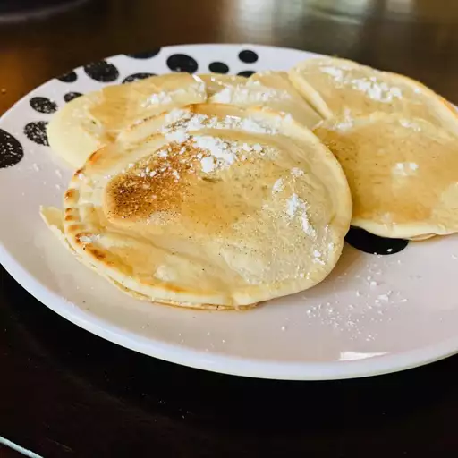

Vegan Pancakes

Recipe and Ingredients for Vegan Pancakes
This vegan Pancakes taste insanely good with any topping you like. With some protein rich toppings and maybe even some vegetables you can turn your vegan pancakes into a healthy and delicious meal. As desert you can also choose a more high caloric version with a chocolate topping or filled with ice cream.
Ingredients
- 800ml vegan Soy Milk
- 400g flour
- 10ml Sparkling Water (instead of eggs)
- Oil
Steps
- Mix the flour with the soy milk and stir until smooth
- Add the sparkling water and stir a little but not to much since the sparkling bubbles are needed to substitute for the eggs
- Heat your stove to 4 add some oil and put some of the pancake batter in
- After 1-2 min flip the pancake, after another 1-2 min your pancake is finished
- Proceed the same way for the other pancakes until you have no batter left